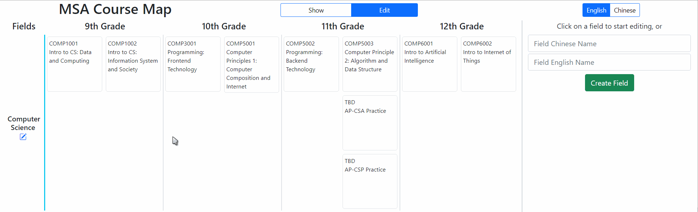

致探月的毕业礼物 / A Graduation Gift for MSA
Hello everyone!
大家好呀:D
Hi! I’m Daniel He, a 12th grader who will graduate in a dozen hours. Before my departure to my future journey, I would like to present a graduation gift to MSA and to the MSA Community.
我是Daniel, 一位十几个小时之后即将毕业的12年级学习者。在我迈向未来之前，我想给探月和探月的社区送上一份毕业礼物。
Several weeks ago, another 12th grade learner Jessica and I were organizing the course structures of MSA, trying to recommend a learning path for each of the fields for MSA learners. We realized 1) without guidelines and clear dependency descriptions between courses, many learners are frustrated when making their course selections, and 2) the MSA course structure is still in a constantly developing period, adding in new guidelines and course syllabus every year. The only material provided by the school is an academic handbook, which mainly lists out the courses and syllabi according to their departments, but not their relationships.
几周前，我和另一位12年级学习者Jessica合作整理探月的课程体系，并试图给每个专业方向的学习者较为系统的课程推荐。我们发现，1) 课程与课程中不清晰的联系常常让学习者难以选择课程；2) 探月的学科课程仍处于发展阶段，每年都有新的课程规范和课程纲要。学习者唯一能参考的材料是探月的学术手册，但这本手册也更多在分部门列举课程，并没有给出具体方向的选课建议。
In June, I started choosing my courses for my future college. I encountered a webpage in my college website that highlights which courses are prerequisite/subsequent for a particular course when my mouse hovers on the course name. I realized a clear visualization of how every course is planned in every semester in every field could help this situation greatly. 3 days before, I started coding the project into reality, and now the gift is complete.
六月份时，我开始进行大一的选课。我偶然间逛到了大学官网的一个页面：当鼠标悬浮在一个课程上时，网站会自动高亮该课程的前置与后置课程。这时我才意识到可以用清晰的可视化工具辅助选课过程：能一次性看到4年的课程排布会很大程度上帮助选课和做计划。我从三天前开始试着用代码将这一构想变为现实：现在，这份礼物完成了。
For learners and parents:
对于学习者与家长们：
-
The dependency between courses:
展示课程之间的依赖关系： Hovering above high-level courses shows the direct prerequisite courses in dark-green and indirect prerequisite courses in light-green; hovering above low-level courses shows subsequent courses that are supported by this course in blue. This allows you to plan out which courses to take in a longer period of time ahead.
将鼠标放在较高阶课程上时，可以看到这门课程的直接前置要求（深绿色）和间接课程要求（浅绿色）；将鼠标放在较低阶课程上时，可以看到这门课所支持的后置课程（蓝色）。大家可以用这个功能做较长期的规划。 -
The dependency between fields:
展示不同专业领域之间的联系： Especially in STEM majors, learners are encouraged to also learn in related majors. When putting these majors side-by-side, the course relationships between the two fields can easily been discovered.
在许多专业中（尤其是STEM方向的专业中），学习者最好学习一些相关专业的课程。将两个专业方向并排放置时，可以很清楚地看到两个专业领域课程之间的联系。
For guardians: I have also developed an intuitive system for editing these complex relationships between courses.
对于Guardians们：针对这些复杂关系，我开发了一个极易操作的控制系统：
-
All courses can be dragged-and-dropped between semesters in the edit mode; courses can be added from the entire course list/deleted. You can only edit one field’s course list at one time;
所有的课程都可以被“拖来拖去”。在编辑模式中，你可以在学期间拖动课程、从课程列表添加/删除课程。一次只能编辑一个专业领域哟~
-
Double-clicking an element in edit mode allows you to edit its prerequisite course. Clicking a non-prerequisite course will add it to the selected course’s prerequisites; clicking an already prerequisite course will remove it;
双击一个课程，就可以编辑它的直接前置课程：点击一个课程会将其加入到被选中课程的前置列表中，而再点击一次则会将其移除前置课程列表。  -
When a prerequisite course is placed behind a course in time, a warning would appear;
当一个前置课程从时间上晚于它的后置课程时，系统会发出警报。
-
This is how fast you can create a new field, order all the courses, and create it’s dependency:
下面这个动图展示了创建一个新的专业领域，添加所有课程并添加前置课程关系有多快：
For the IT Department & those who are interested in this system:
对于IT部门，以及所有对这个系统有兴趣的人们：
-
The project is being developed using Vue.js 3.0 and Bootstrap 5.0. Bootstrap-icons, vue-draggable, and axios are also used for UI/web features.
这个项目的核心技术栈为Vue.js 3.0与Bootstrap 5.0，还使用了Bootstrap-icons, vue-draggable和axios等npm包作为用户界面/网络通讯依赖。 -
All code of this project is hosted on gitee: https://gitee.com/Power_tile/msa-course-map
这个项目的所有代码都被我放在了gitee上：https://gitee.com/Power_tile/msa-course-map -
This project will stay open-sourced. I will add more feature, fix (write) more bugs, and encapsulate it better during my summer vacation.
这个项目会一直保持开源；我会在暑假添功能，修bug，进行下一步封装。
This email is not just to address a problem I identified in the MSA community and share this gift, but also to emphasize what I always believe:
这个邮件中，我不仅想分享自己在社区中遇到的问题并送出这个礼物，还想再强调一次我一直相信的观点：
Great creations start from sparks in life. Do not let your heart be weary, open yours eyes to your surroundings, and have the courage to continue what you have started.
所有伟大的创造都来自与生活中的灵感火花。不要让自己的心变得疲惫；你只需要睁开眼睛，勇往直前。
I truly hope this gift is inspiring.
我衷心希望这份礼物能激发一些灵感。
Special thanks to Jerry, who had always been my mentor and sincere friend; to Zhou Zhou and Xin Liu, who were kind, helpful, and passionate to me when we were co-working in IT projects and in daily life; to all people whose code was used in my project, for their perseverance, kindness, and generosity of open-sourcing their project; to the MSA community, where everyone supported and cared each other.
感谢我永远的导师&挚友Jerry；感谢周洲和刘鑫，在一起做项目和日常生活中给我以善良，温暖，与力量；感谢所有在我的项目中用到代码的书写者们，谢谢你们对开源项目的无私和坚持；感谢探月社区中能互相关心与支持的每个人。
Sincerest Regards,
祝好，
Jizheng (Daniel) He 何基正
July 3rd, 2021 / 2021年7月3日